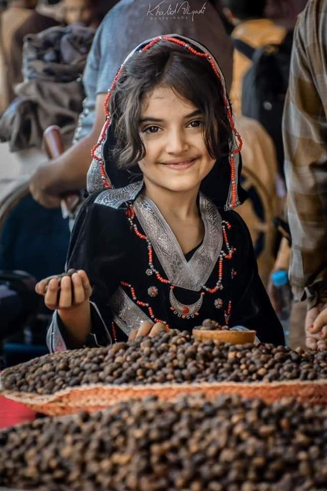
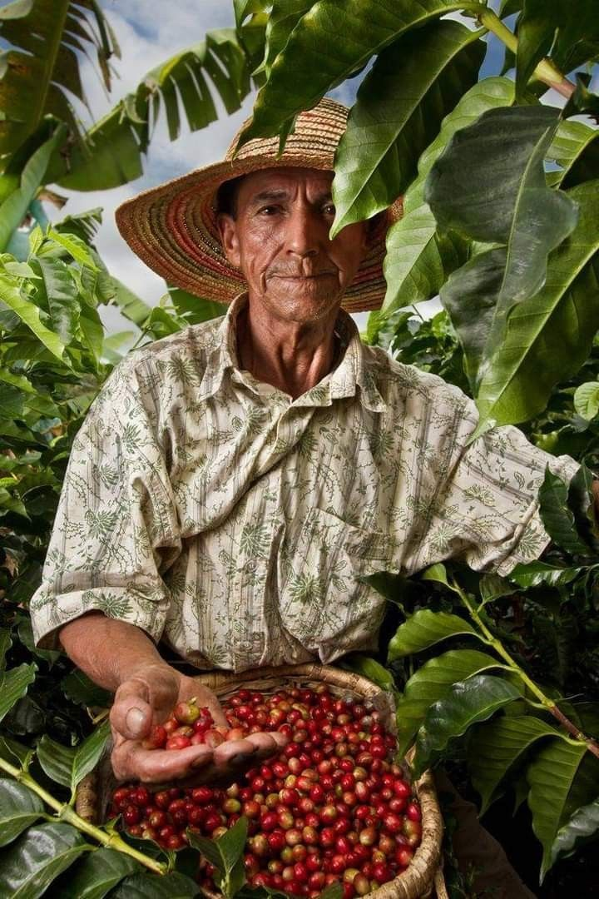
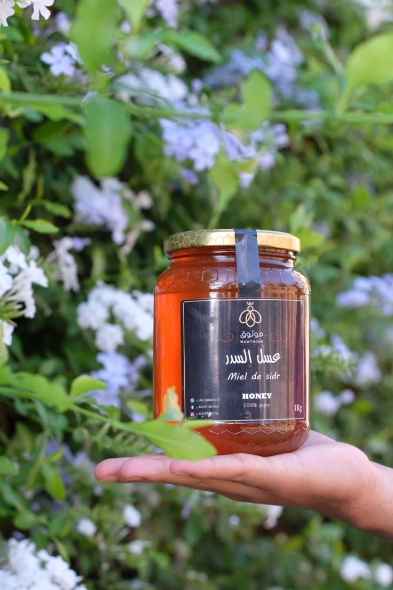

بن يمني فاخر
بن المخا – عراقة النكهة من قلب الجبال اليمنية


وصف المنتج
بن يمني طبيعي 100% من مرتفعات المخا وإب، يتم حصاده وتجفيفه يدويًا لضمان أعلى جودة ونكهة. يتميز بنكهة عميقة، مع لمسة من الكراميل والكاكاو، ويُحمّص حسب الطلب للحفاظ على الطزاجة.
📌 المواصفات:
نوع المنتج:بن يمني أصلي
منطقة الزراعة:مرتفعات المخا وإب
درجة التحميص:وسط / غامق حسب الطلب
طريقة التعبئة:أكياس مقاومة للرطوبة
مدة الصلاحية:12 شهر
السعر: 30 دولار / 500 جرام
عسل سدر ملكي
عسل السدر – ذهب اليمن الطبيعي


وصف المنتج
يُستخرج من وديان حضرموت النقية، عسل السدر هو الأجود في العالم. ذو لون ذهبي داكن، غني بالفيتامينات، ويُستخدم لعلاج العديد من الأمراض وتعزيز المناعة.
📌 المواصفات:
نوع العسل:عسل سدر نقي 100%
منطقة الإنتاج:وديان حضرموت
النقاء:غير مفلتر وخالي من الإضافات
طريقة الحفظ:يُحفظ في مكان بارد وجاف
مدة الصلاحية:24 شهر
السعر: 50 دولار / 500 جرام